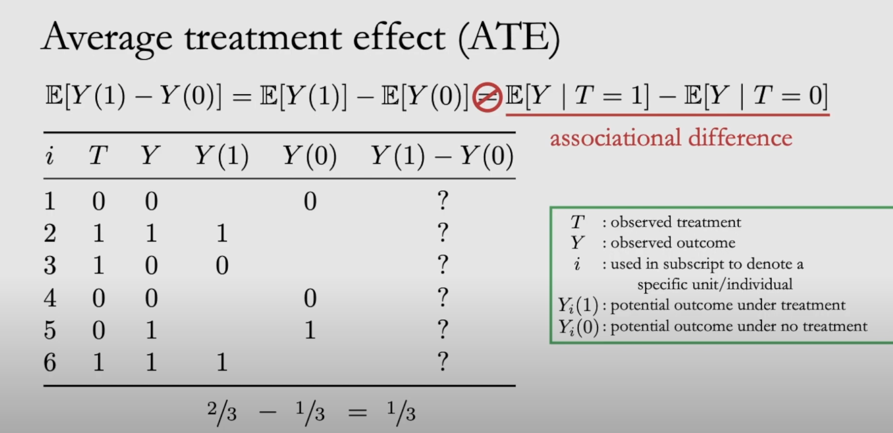
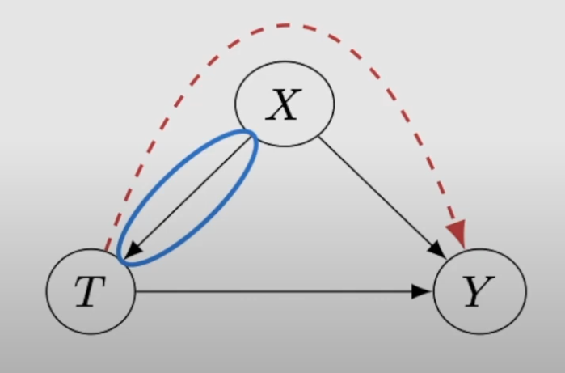
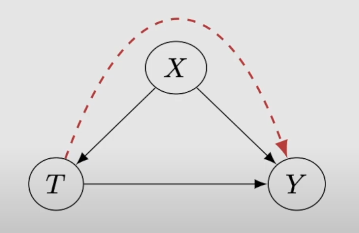
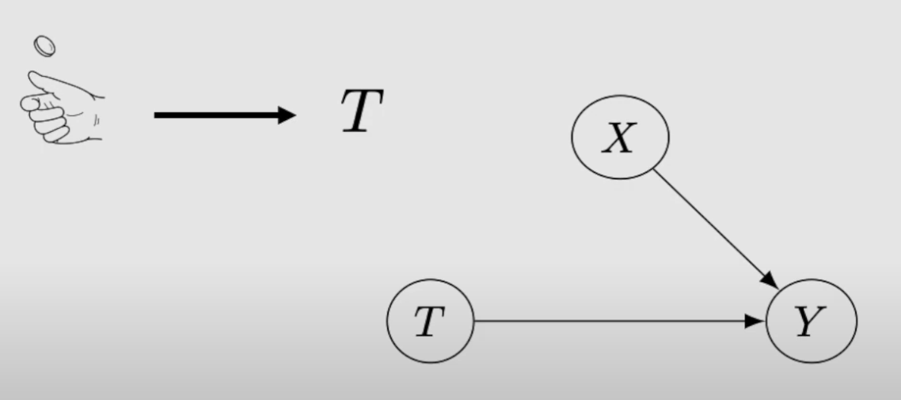
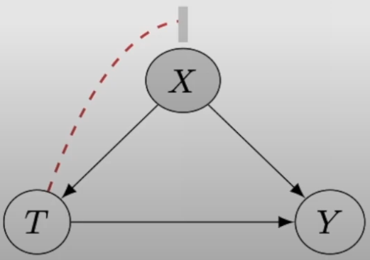
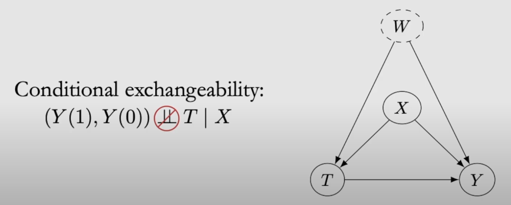
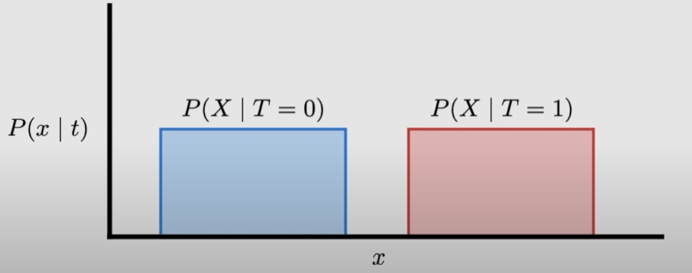
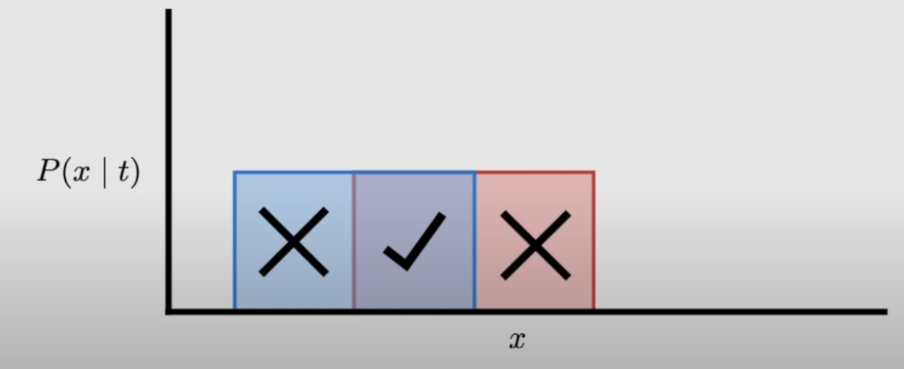
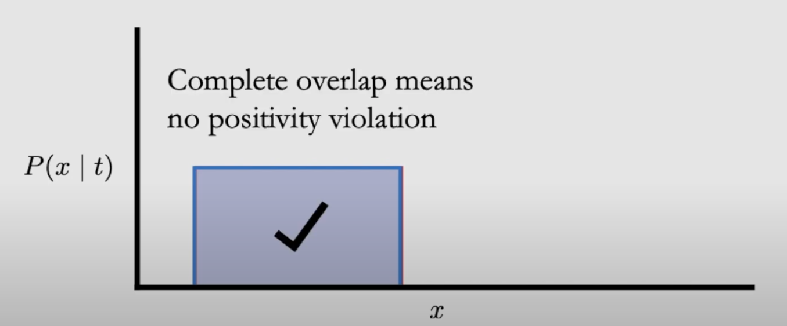
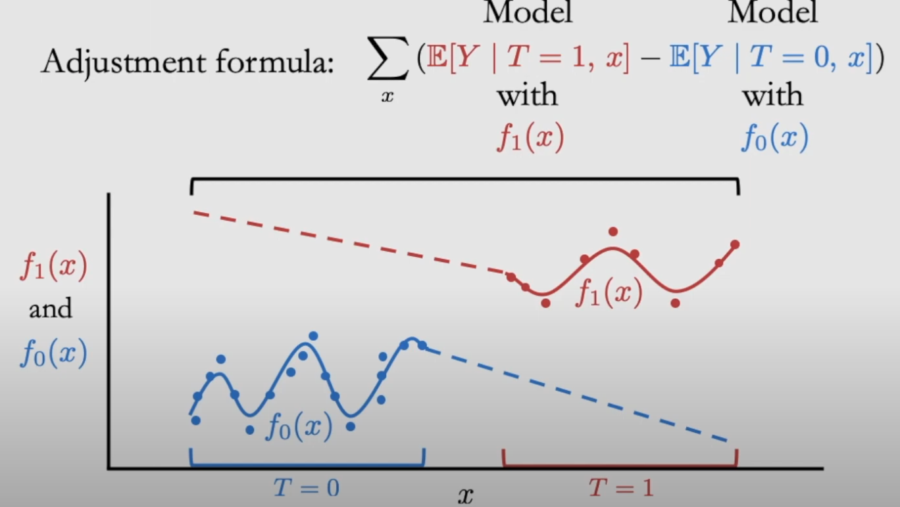

1 What are Potential Outcomes?
1.1 Key Concepts
- Causal Inference: Understanding the effect of a treatment or policy on an outcome.
- Example:
- If you have a headache and:
- Take a pill: Your headache goes away.
- Don’t take the pill: Your headache persists.
- In this case, the pill likely has a causal effect on your headache.
- If the headache disappears regardless of taking the pill, the pill doesn’t seem to have a causal effect.
- If you have a headache and:
2 Notation and Definitions
2.1 Observed Treatment and Outcome
- Treatment (T): Denoted as T (e.g., whether you take the pill or not).
- Outcome (Y): Denoted as Y (e.g., whether your headache goes away or persists).
2.2 Specific Unit/Individual
- Y_i denotes the outcome for individual i:
- Y_i(1): Potential outcome if individual i takes the treatment (T=1).
- Y_i(0): Potential outcome if individual i does not take the treatment (T=0).
2.3 Simplified Notation for Potential Outcomes
- Y_i(1): Outcome observed if treatment is applied.
- Y_i(0): Outcome observed if treatment is not applied.
2.4 Example
- If Y_i(0) = 0: Without treatment, the individual still has a headache.
- If Y_i(1) = 1: With treatment, the individual has no headache.
- Observing 1 for Y means no headache.
- Observing 0 for Y means headache persists.
3 Defining Causal Effect
- The causal effect is defined as:
\text{Causal Effect} = Y_i(1) - Y_i(0)
- Example:
- Y_i(1) = 1 (no headache with pill).
- Y_i(0) = 0 (headache persists without pill).
- Causal effect = 1 - 0 = 1.
- Example:
4 The Fundamental Problem of Causal Inference
4.1 Understanding the Problem
- Causal Effect: Defined as:
\text{Causal Effect} = Y_i(1) - Y_i(0)
- Example: If Y_i(1) = 1 and Y_i(0) = 0, the causal effect is 1 - 0 = 1.
- Key Issue: We cannot observe both Y_i(1) (outcome under treatment) and Y_i(0) (outcome under no treatment) simultaneously for the same individual.
4.2 Observability of Potential Outcomes
- If no treatment is applied:
- Observed: Y_i(0) (e.g., headache persists).
- Unobserved: Y_i(1) (outcome under treatment, counterfactual).
- If treatment is applied:
- Observed: Y_i(1) (e.g., headache goes away).
- Unobserved: Y_i(0) (outcome under no treatment, counterfactual).
4.3 Counterfactuals and Factuals
- Counterfactual: The potential outcome that is not observed.
- Factual: The potential outcome that is observed.
- Unit-Level Causal Effect: Remains unobservable because one potential outcome is always missing.
4.4 Table Illustration of Potential Outcomes
| i (Individual) | T (Treatment) | Y (Observed Outcome) | Y(1) (Outcome Under Treatment) | Y(0) (Outcome Without Treatment) | Y(1) - Y(0) (Causal Effect) |
|---|---|---|---|---|---|
| 1 | 0 | 0 | ? | 0 | ? |
| 2 | 1 | 1 | 1 | ? | ? |
| 3 | 1 | 0 | 0 | ? | ? |
| 4 | 0 | 0 | ? | 0 | ? |
| 5 | 0 | 1 | ? | 1 | ? |
| 6 | 1 | 1 | 1 | ? | ? |
4.5 Key Takeaways
- Fundamental Problem: At the individual level, causal effects cannot be observed because one potential outcome is always missing.
- Missing Data: The counterfactual outcomes are treated as missing values, which makes direct observation of causal effects impossible.
5 Getting Around the Fundamental Problem of Causal Inference
5.1 Key Challenge
- From the fundamental problem of causal inference, we know:
Y_i(1) - Y_i(0)
- This quantity (causal effect) cannot be observed for any individual.
5.2 Using Expectations to Estimate Causal Effects
- Approach: Take expectations over all individuals in the population:
\mathbb{E}[Y_i(1) - Y_i(0)]
- By linearity of expectation: \mathbb{E}[Y_i(1)] - \mathbb{E}[Y_i(0)]
- This simplifies to: \mathbb{E}[Y | T = 1] - \mathbb{E}[Y | T = 0]
- Key Idea: Use conditional expectations of observed outcomes given treatment status to estimate causal effects.
5.3 Conditional Expectation in Practice
- Using a table of observed outcomes:
- For T = 1: Take the average of all observed Y values in the treatment group.
- For T = 0: Take the average of all observed Y values in the control group.
- Example:
- Average of Y(1) (treatment group): \frac{2}{3}
- Average of Y(0) (control group): \frac{1}{3}
- Difference: \mathbb{E}[Y | T = 1] - \mathbb{E}[Y | T = 0] = \frac{2}{3} - \frac{1}{3} = \frac{1}{3}
- This difference is called the associational difference. 
5.4 Associational vs. Causal Quantities
- Associational Difference:
\mathbb{E}[Y | T = 1] - \mathbb{E}[Y | T = 0]
- Relies on observed data but does not account for confounding variables.
- Average Treatment Effect (ATE):
\mathbb{E}[Y_i(1) - Y_i(0)]
- A true causal quantity.
- Key Distinction: Association is not causation.
5.5 Example of Confounding
- Observed association: People who sleep with shoes on often wake up with headaches.
- Incorrect causal interpretation: Sleeping with shoes on causes headaches.
- Actual cause: Drinking alcohol the night before leads to both:
- Sleeping with shoes on.
- Waking up with a headache.
- Confounding Variable: Alcohol consumption creates a spurious association between sleeping with shoes and headaches.
5.6 Graphical Interpretation of Confounding
- Confounding Arc:
- T (Treatment) → X (Covariates) → Y (Outcome).
- X (e.g., drinking) confounds the effect of T on Y.
5.7 Treatment Group Comparability
- Issue: Treatment groups (T = 1 and T = 0) may differ in key characteristics (e.g., drinking behavior).
- Solution: Create comparable groups.
- Ensure treatment and control groups have similar distributions across important covariates.
- When groups are comparable, the associational difference equals the average treatment effect.
6 Assumptions for Equating ATE and Associational Difference
6.1 The Key Assumption: Ignorability
- Definition: The potential outcomes Y_i(1) and Y_i(0) are both independent of treatment T: (Y_i(1), Y_i(0)) \perp T
- Implication: If ignorability holds, the average treatment effect (ATE) is equal to the associational difference: \mathbb{E}[Y_i(1) - Y_i(0)] = \mathbb{E}[Y | T = 1] - \mathbb{E}[Y | T = 0]
6.2 Mathematical Derivation
- Starting with the ATE: \mathbb{E}[Y_i(1)] - \mathbb{E}[Y_i(0)]
- Under ignorability, we can condition on treatment: \mathbb{E}[Y_i(1) | T = 1] - \mathbb{E}[Y_i(0) | T = 0]
- By the definition of conditional expectation: \mathbb{E}[Y_i(1) | T = 1] = \mathbb{E}[Y | T = 1] \mathbb{E}[Y_i(0) | T = 0] = \mathbb{E}[Y | T = 0]
- Thus, the ATE becomes: \mathbb{E}[Y | T = 1] - \mathbb{E}[Y | T = 0]
6.3 Why “Ignorability”?
- Ignorability means we can ignore missing potential outcomes (i.e., the question marks in our data) and compute averages directly from observed outcomes:
- \mathbb{E}[Y | T = 1] for treated individuals.
- \mathbb{E}[Y | T = 0] for untreated individuals.
6.4 Graphical Interpretation of Ignorability
- In a causal graph:
- Confounding present: Covariates X influence both treatment T and outcome Y.
- Ignorability achieved: If the edge from X \to T (treatment assignment mechanism) is removed, confounding disappears.
- This removal ensures treatment assignment is independent of potential outcomes. 
6.5 Exchangeability: An Alternative Perspective
- Definition: Exchangeability means the treatment and control groups are interchangeable in terms of expected outcomes.
- Example:
- Group A: Treatment group (T = 1), with \mathbb{E}[Y | T = 1] = \mathbb{E}[Y_i(1)].
- Group B: Control group (T = 0), with \mathbb{E}[Y | T = 0] = \mathbb{E}[Y_i(0)].
- Exchangeability: Swapping treatment assignment between groups A and B does not change the expected outcomes: \mathbb{E}[Y_i(1) | T = 1] = \mathbb{E}[Y_i(1) | T = 0] \mathbb{E}[Y_i(0) | T = 0] = \mathbb{E}[Y_i(0) | T = 1]
6.6 Implications of Exchangeability
- Expected Value Independence: \mathbb{E}[Y_i(1)] \text{ is independent of } T \mathbb{E}[Y_i(0)] \text{ is independent of } T
- Conclusion: Exchangeability ensures that the treatment groups and control groups can represent the same population, allowing for valid comparisons.
7 Identifiability and Randomized Control Trials (RCTs)
7.1 Identifiability: Bridging Causal and Statistical Quantities
- Key Idea: Identifiability is the ability to express causal quantities in terms of statistical quantities.
- Causal Quantities: Derived from cause-and-effect relationships, such as \mathbb{E}[Y(1)] and \mathbb{E}[Y(0)].
- Statistical Quantities: Derived from observed data, such as \mathbb{E}[Y | T = 1] and \mathbb{E}[Y | T = 0].
- Definition of Identifiability: A causal quantity is identifiable if it can be expressed purely in terms of statistical quantities: \mathbb{E}[Y(T)] \text{ is identifiable if } \mathbb{E}[Y | T]
7.2 Equation for Identifiability
- Using the ignorability assumption, we can connect causal and statistical quantities:
\mathbb{E}[Y(1)] - \mathbb{E}[Y(0)] = \mathbb{E}[Y(1) | T = 1] - \mathbb{E}[Y(0) | T = 0]
- By ignorability: \mathbb{E}[Y(1) | T = 1] = \mathbb{E}[Y | T = 1] \mathbb{E}[Y(0) | T = 0] = \mathbb{E}[Y | T = 0]
- Therefore: \mathbb{E}[Y(1)] - \mathbb{E}[Y(0)] = \mathbb{E}[Y | T = 1] - \mathbb{E}[Y | T = 0]
- Causal Quantities:
- \mathbb{E}[Y(1)] and \mathbb{E}[Y(0)] are causal expectations under treatment and no treatment.
- Statistical Quantities:
- \mathbb{E}[Y | T = 1] and \mathbb{E}[Y | T = 0] are conditional expectations based on observed data.
7.3 Importance of Ignorability for Identifiability
- Ignorability Assumption: Ensures that causal effects (e.g., average treatment effect) are identifiable from statistical quantities.
- \mathbb{E}[Y(1)] = \mathbb{E}[Y | T = 1]
- \mathbb{E}[Y(0)] = \mathbb{E}[Y | T = 0]
- Without ignorability, confounding can distort this relationship, making causal quantities unidentifiable.
7.4 Randomized Control Trials (RCTs): Enforcing Ignorability
- Purpose of RCTs: Ensure that the ignorability assumption holds by eliminating confounding.
- Mechanism: Assign treatment (T = 1 or T = 0) randomly, using a coin flip, making treatment independent of potential outcomes: (Y(1), Y(0)) \perp T
7.5 Example: Sleeping with Shoes and Headaches
- Initial Scenario (Confounding Present):
- T = 1: “Slept with shoes on,” where most individuals were drunk.
- T = 0: “Slept without shoes on,” where most individuals were sober.
- Confounding exists due to the relationship between drunkenness (X), treatment (T), and outcome (Y).
- RCT Design:
- Change T to mean:
- T = 1: “Slept with shoes on.”
- T = 0: “Slept without shoes on.”
- Randomly assign treatment by:
- Flipping a coin in drunk individuals’ rooms to decide whether to remove their shoes.
- Flipping a coin in sober individuals’ rooms to decide whether to put shoes on them.
- Result: Treatment groups (T = 1 and T = 0) become comparable, eliminating confounding.
- Change T to mean:
7.6 Graphical Interpretation of RCTs
- Before RCT: Causal graph shows X \to T \to Y, where X (e.g., drunkenness) confounds the effect of T on Y. !
- After RCT: Randomization ensures treatment is assigned independently of confounders:
- Treatment T becomes a function of a coin flip.
- The edge X \to T is removed, eliminating confounding. 
7.7 Summary of RCT Benefits
- Identifiability Achieved: RCTs ensure that the average treatment effect (ATE) can be estimated using associational differences: \mathbb{E}[Y(1)] - \mathbb{E}[Y(0)] = \mathbb{E}[Y | T = 1] - \mathbb{E}[Y | T = 0]
- Elimination of Confounding: Randomization removes the influence of confounders on treatment assignment.
8 Conditional Exchangeability and the Adjustment Formula
8.1 Conditional Exchangeability
- Scenario with Confounding:
- In real-world settings, covariates X often act as common causes of both treatment (T) and outcome (Y), introducing confounding.
- Confounding affects the ability to directly estimate causal effects.
- Conditional Exchangeability:
- The potential outcomes Y_i(1) and Y_i(0) are independent of treatment T conditional on X: (Y_i(1), Y_i(0)) \perp T \mid X
- Graphically, conditioning on X blocks the confounding. 
8.2 Identification of the Conditional Average Treatment Effect (CATE)
- Definition of CATE:
- The conditional average treatment effect is the expected difference in potential outcomes conditioned on X: \mathbb{E}[Y(1) - Y(0) | X]
- Derivation of CATE:
- Start with the difference in expectations: \mathbb{E}[Y(1) - Y(0) | X] = \mathbb{E}[Y(1) | X] - \mathbb{E}[Y(0) | X]
- Apply conditional exchangeability: \mathbb{E}[Y(1) | X] = \mathbb{E}[Y(1) | T = 1, X] \mathbb{E}[Y(0) | X] = \mathbb{E}[Y(0) | T = 0, X]
- Observed outcomes under treatment: \mathbb{E}[Y(1) | T = 1, X] = \mathbb{E}[Y | T = 1, X] \mathbb{E}[Y(0) | T = 0, X] = \mathbb{E}[Y | T = 0, X]
- Therefore, the CATE can be written as: \mathbb{E}[Y(1) - Y(0) | X] = \mathbb{E}[Y | T = 1, X] - \mathbb{E}[Y | T = 0, X]
- Conclusion: The CATE is now expressed as a difference between statistical quantities, making it identifiable under conditional exchangeability.
8.3 From CATE to ATE
- Marginalizing Over X:
- To move from conditional effects (CATE) to overall effects (ATE), we marginalize over X: \mathbb{E}[Y(1) - Y(0)] = \mathbb{E}_X \Big[ \mathbb{E}[Y | T = 1, X] - \mathbb{E}[Y | T = 0, X] \Big]
- This process is referred to as the adjustment formula.
8.4 Graphical Intuition for Adjustment
- Graph with Confounding:
- Covariate X acts as a confounder for the effect of treatment T on outcome Y.
- Adjusting for X:
- Conditioning on X blocks the confounding pathway.
- Marginalizing over X ensures that the ATE reflects the true causal effect.
8.5 Unconfoundedness Assumption
- Unconfoundedness (Conditional Exchangeability):
- Also referred to as Conditional ignorability, Conditional exchangeability.
- Ensures: (Y_i(1), Y_i(0)) \perp T \mid X
- Untestable Nature of Unconfoundedness:
- In practice, there may be unobserved confounders (W) that affect both T and Y.
- If such confounders exist, conditional exchangeability given X is invalid.
- Since we cannot observe all possible confounders, unconfoundedness remains an untestable assumption. 
8.6 Summary
- Conditional Exchangeability: Key for identifying causal effects in the presence of confounding.
- Adjustment Formula: Provides a way to compute the average treatment effect (ATE) by marginalizing over covariates.
- Unconfoundedness: A critical, but untestable, assumption required to ensure identifiability of causal effects.
9 Positivity and Its Importance in Causal Inference
9.1 Definition of Positivity
- Positivity Assumption: For any covariate values X that occur with non-zero probability in the population, the probability of receiving treatment must be strictly greater than 0 and less than 1: 0 < P(T = 1 \,|\, X=x) < 1
- Interpretation: Every subgroup defined by X must have some individuals in both the treatment group (T=1) and the control group (T=0).
9.2 Mathematical Justification
- Consider the adjustment formula: \mathbb{E}[Y(1) - Y(0)] = \sum_X \Big( \mathbb{E}[Y \,|\, T = 1, X] P(X \,|\, T = 1) - \mathbb{E}[Y \,|\, T = 0, X] P(X \,|\, T = 0) \Big)
- If P(T = 1 \,|\, X) = 0 or P(T = 0 \,|\, X) = 0 for any X, the adjustment formula becomes undefined due to division by zero when using Bayes’ rule: P(T = 1 \,|\, X) = \frac{P(X \,|\, T = 1) P(T = 1)}{P(X)}
9.3 Intuition Behind Positivity
- Causal Effect in Subsets:
- If a subset of the population (e.g., X=x) contains only treated individuals (T=1) or only controls (T=0), we cannot estimate the causal effect in that subset because there is no comparison group.
- For example:
- If all individuals with X=x are untreated, how can we estimate the effect of treatment for that subgroup?
9.4 Positivity Violations
- Complete Violation:
- If P(T = 1 \,|\, X=x) = 1 or P(T = 0 \,|\, X=x) = 1, we have a severe positivity violation.
- Overlap and Common Support:
- Positivity is sometimes referred to as overlap or common support:
- The conditional covariate distributions P(X \,|\, T=1) and P(X \,|\, T=0) must overlap.
- No Overlap: If these distributions do not overlap, there is a positivity violation.
- Positivity is sometimes referred to as overlap or common support:
9.5 Visualizing Overlap
- No Overlap:
- The distributions of P(X \,|\, T=1) and P(X \,|\, T=0) are entirely separate.
- This leads to positivity violations in regions where one group has no representation.
- Partial Overlap:
- In regions where the distributions overlap, positivity holds.
- In regions where there is no overlap, positivity is violated.
9.6 Positivity and the Curse of Dimensionality
- As the number of covariates (dimensionality) increases:
- The overlap between P(X \,|\, T=1) and P(X \,|\, T=0) diminishes exponentially.
- This phenomenon is known as the curse of dimensionality.
- Trade-off Between Unconfoundedness and Positivity:
- Including more covariates helps satisfy unconfoundedness but worsens positivity.
9.7 Practical Consequences of Positivity Violations
- Adjustment Formula: Becomes undefined in regions with positivity violations.
- Extrapolation Problems:
- When positivity is violated, models must extrapolate to regions without data, leading to unreliable estimates.
- Example:
- If X values in the treatment group (T=1) do not overlap with the control group (T=0), we must extrapolate P(Y \,|\, T=1, X) and P(Y \,|\, T=0, X) into unobserved regions.
- Extrapolation errors can lead to biased causal effect estimates.
9.8 Summary
- Importance: Ensures the adjustment formula is well-defined and that causal effects can be estimated reliably.
- Overlap: Positivity violations occur when there is no overlap in the covariate distributions between treatment and control groups.
- Trade-offs:
- Satisfying unconfoundedness by conditioning on more covariates can lead to worse positivity due to the curse of dimensionality.
- Consequences of Violations:
- Adjustment formula becomes invalid.
- Extrapolation leads to unreliable and biased estimates.
10 Unconfoundedness and Positivity
10.1 Unconfoundedness
- Definition: Unconfoundedness ensures no unobserved confounders exist between treatment (T) and outcome (Y) given covariates (X). Formally: (Y(1), Y(0)) \perp T \mid X where Y(1) and Y(0) are potential outcomes under treatment and control, respectively.
10.2 Positivity
- Definition: For all covariate values X = x that occur in the population of interest (P(X = x) > 0), the probability of receiving treatment or control is strictly positive: 0 < P(T = 1 \mid X = x) < 1.
- Adjustment Formula:
- Recall the adjustment formula for causal inference: \mathbb{E}[Y(1) - Y(0)] = \mathbb{E}_X \left[\mathbb{E}[Y \mid T = 1, X] - \mathbb{E}[Y \mid T = 0, X] \right].
- For discrete variables: \sum_x P(X = x) \left( \sum_y y P(Y = y \mid T = 1, X = x) - \sum_y y P(Y = y \mid T = 0, X = x) \right).
- Using Bayes’ Rule: \sum_x P(X = x) \left( \sum_y \frac{y P(Y = y, T = 1, X = x)}{P(T = 1 \mid X = x) P(X = x)} - \sum_y \frac{y P(Y = y, T = 0, X = x)}{P(T = 0 \mid X = x) P(X = x)} \right).
10.3 Importance of Positivity
- Role of Positivity in Adjustment Formula:
- The adjustment formula involves the term P(T = t \mid X = x) in the denominator.
- If P(T = t \mid X = x) = 0, division by zero occurs, making the formula undefined.
10.4 Intuition Behind Positivity
- Subset Analysis:
- If a subset of the population where X = x exists such that all individuals receive control (T = 0), it is impossible to estimate the effect of treatment (T = 1) in that subset, and vice versa.
- Overlap and Common Support:
- Positivity ensures that: \text{Support}(P(X \mid T = 1)) \cap \text{Support}(P(X \mid T = 0)) \neq \emptyset.
- A lack of overlap leads to severe positivity violations, where causal inference becomes invalid.
10.5 Overlap in Conditional Distributions
- Visualization:
- Consider the distributions P(X \mid T = 1) and P(X \mid T = 0):
- If these distributions do not overlap, severe positivity violations occur because some covariates X are only observed under treatment or control.  
- If the distributions completely overlap, positivity is satisfied, and causal inference is valid.
- Using Bayes’ Rule, this can also be visualized in terms of P(T \mid X). 
- Consider the distributions P(X \mid T = 1) and P(X \mid T = 0):
10.6 Consequences of Violating Positivity
- Extrapolation Issues:
- In regions where P(T = t \mid X) = 0, models must extrapolate to estimate E[Y \mid T = t, X = x]: E[Y \mid T = 1, X = x] = f_1(x), \quad E[Y \mid T = 0, X = x] = f_0(x).
- Severe positivity violations lead to extrapolation outside observed data, causing inaccuracies in estimating treatment effects. 
10.7 Trade-offs Between Unconfoundedness and Positivity
- Unconfoundedness:
- Improves as more covariates are conditioned on.
- Positivity:
- Deteriorates as more covariates are conditioned on due to the “curse of dimensionality.”
- Example:
- In one dimension, supports might overlap by 50\%.
- In two dimensions: \text{Overlap} = 50\% \times 50\% = 25\%.
- Overlap decreases exponentially as dimensionality increases.
11 No Interference
11.1 Definition
- The No Interference Assumption states that the potential outcome of an individual depends only on their own treatment and not on the treatment of others in the population.
- Mathematically:
Y_i(\mathbf{T}) = Y_i(T_i)
where:
- Y_i is the potential outcome for individual i.
- \mathbf{T} is the treatment vector for all individuals in the population.
- T_i is the treatment assignment for individual i.
11.2 Explanation
- Graphically, this means there are no “external” influences (e.g., other individuals’ treatments) acting as parents to Y_i.
- Example:
- Suppose the treatment T_i is getting a dog, and the outcome Y_i is happiness:
- If your happiness depends on whether your friends also get dogs (e.g., increased opportunities for playdates), this violates the no interference assumption.
- Under no interference, Y_i depends only on whether you get a dog.
- Suppose the treatment T_i is getting a dog, and the outcome Y_i is happiness:
12 Consistency
12.1 Definition
- The Consistency Assumption ensures that if an individual receives a specific treatment (T = t), the observed outcome matches the potential outcome for that treatment.
- Formally: \text{If } T = t, \text{ then observed } Y = Y(t).
12.2 Importance
- Consistency ensures that potential outcomes Y(t) are well-defined for each treatment t.
- Violations occur when there are different “versions” of the same treatment that lead to different outcomes.
12.3 Example
- Consider the treatment:
- T = 1: You get a dog.
- T = 0: You don’t get a dog.
- If T = 1, the observed outcome depends on the type of dog:
- If you get a golden retriever, Y = 1 (happy).
- If you get a chihuahua, Y = 0 (unhappy).
- This is a violation of consistency because the same treatment value (T = 1) leads to different outcomes depending on the version of the treatment.
12.4 No Multiple Versions of Treatment
- Another way to describe violations of consistency is the No Multiple Versions of Treatment Assumption.
- For consistency to hold:
- T = 1 must have a single, unique definition without variations.
- In the example, both “golden retriever” and “chihuahua” are different versions of T = 1, which violates this assumption.
13 Tying It All Together
13.1 Four Key Assumptions
The proof of identifiability for the average treatment effect (ATE) relies on the following assumptions:
- No Interference: Ensures potential outcomes depend only on an individual’s own treatment.
- Linearity of Expectation: Allows breaking down the expectation into manageable components (not an assumption but a property of expectations).
- Law of Iterated Expectations: Helps to condition on covariates X to introduce conditional exchangeability.
- Unconfoundedness and Positivity: Ensures that treatment is independent of potential outcomes given X, and every treatment has a non-zero probability for all values of X.
- Consistency: Relates observed outcomes to potential outcomes for the given treatment.
13.2 Step-by-Step Breakdown
- Start with the Expected Difference in Potential Outcomes:
\mathbb{E}[Y(1) - Y(0)] = \mathbb{E}[Y(1)] - \mathbb{E}[Y(0)].
- Here, the No Interference assumption justifies that Y(1) and Y(0) depend only on individual treatments.
- Apply Linearity of Expectation:
\mathbb{E}[Y(1)] - \mathbb{E}[Y(0)] = \mathbb{E}_X[\mathbb{E}[Y(1) \mid X]] - \mathbb{E}_X[\mathbb{E}[Y(0) \mid X]].
- Linearity allows separating expectations over X.
- Use the Law of Iterated Expectations:
\mathbb{E}_X[\mathbb{E}[Y(1) \mid X]] - \mathbb{E}_X[\mathbb{E}[Y(0) \mid X]] = \mathbb{E}_X[\mathbb{E}[Y(1) \mid T = 1, X]] - \mathbb{E}_X[\mathbb{E}[Y(0) \mid T = 0, X]].
- This step conditions on T using Unconfoundedness and Positivity, ensuring the treatment assignment mechanism does not bias potential outcomes.
- Apply Consistency:
\mathbb{E}_X[\mathbb{E}[Y(1) \mid T = 1, X]] - \mathbb{E}_X[\mathbb{E}[Y(0) \mid T = 0, X]] = \mathbb{E}_X[\mathbb{E}[Y \mid T = 1, X]] - \mathbb{E}_X[\mathbb{E}[Y \mid T = 0, X]].
- Consistency ensures that Y(t) \mid T = t equals the observed outcome Y when T = t.
13.3 Final Formula for Average Treatment Effect
- Combining all steps, the Average Treatment Effect (ATE) is: \mathbb{E}[Y(1) - Y(0)] = \mathbb{E}_X[\mathbb{E}[Y \mid T = 1, X] - \mathbb{E}[Y \mid T = 0, X]].
- This identifies the ATE using observed data and covariates X, under the four key assumptions.
13.4 Summary
- Each step relies on the proper application of:
- No Interference: Ensures individual treatments affect only individual outcomes.
- Linearity: A mathematical property enabling decomposition.
- Iterated Expectations: Conditions on covariates X.
- Unconfoundedness and Positivity: Justifies introducing T behind the conditioning bar.
- Consistency: Ensures potential outcomes align with observed data.
- These assumptions are crucial to deriving valid causal inferences for the ATE.
14 Identifiability for Average Treatment Effect (ATE)
14.1 Step 1: Begin with No Interference Assumption
- The No Interference Assumption ensures that potential outcomes depend only on an individual’s own treatment and not on the treatment of others.
- Mathematically: \mathbb{E}[Y(1) - Y(0)] = \mathbb{E}[Y(1)] - \mathbb{E}[Y(0)].
14.2 Step 2: Apply Linearity of Expectation
- Using the linearity of expectation, we decompose the difference in potential outcomes: \mathbb{E}[Y(1)] - \mathbb{E}[Y(0)] = \mathbb{E}_X[\mathbb{E}[Y(1) \mid X]] - \mathbb{E}_X[\mathbb{E}[Y(0) \mid X]].
14.3 Step 3: Use the Law of Iterated Expectations
- By the Law of Iterated Expectations, we condition on covariates X to express the expected potential outcomes: \mathbb{E}_X[\mathbb{E}[Y(1) \mid X]] - \mathbb{E}_X[\mathbb{E}[Y(0) \mid X]] = \mathbb{E}_X[\mathbb{E}[Y(1) \mid T = 1, X]] - \mathbb{E}_X[\mathbb{E}[Y(0) \mid T = 0, X]].
- This step relies on Unconfoundedness and Positivity, ensuring that treatment assignment is independent of potential outcomes given X and every treatment has a non-zero probability.
14.4 Step 4: Apply Consistency Assumption
- Using the Consistency Assumption, we equate potential outcomes to observed outcomes under the given treatment: \mathbb{E}_X[\mathbb{E}[Y(1) \mid T = 1, X]] - \mathbb{E}_X[\mathbb{E}[Y(0) \mid T = 0, X]] = \mathbb{E}_X[\mathbb{E}[Y \mid T = 1, X]] - \mathbb{E}_X[\mathbb{E}[Y \mid T = 0, X]].
14.5 Final Formula for Average Treatment Effect
- Combining all steps, the Average Treatment Effect (ATE) is: \mathbb{E}[Y(1) - Y(0)] = \mathbb{E}_X[\mathbb{E}[Y \mid T = 1, X] - \mathbb{E}[Y \mid T = 0, X]].
14.6 Summary of Steps and Assumptions
- No Interference: Justifies that potential outcomes depend only on an individual’s treatment.
- Linearity of Expectation: Decomposes the expectation into manageable parts.
- Law of Iterated Expectations: Conditions on covariates X to facilitate the use of Unconfoundedness and Positivity.
- Unconfoundedness and Positivity: Ensures that treatment assignment does not bias potential outcomes and every treatment is possible for all values of X.
- Consistency: Aligns observed outcomes with potential outcomes under the given treatment.
This proof ties together the four main assumptions—No Interference, Unconfoundedness, Positivity, and Consistency—to establish identifiability of the ATE using observed data.
15 Estimands, Estimates, and the Identification-Estimation Flowchart
15.1 Definitions
Estimand: A quantity we aim to estimate. Estimands can be:
- Causal Estimand:
- Involves causal concepts such as potential outcomes.
- Example: The Average Treatment Effect (ATE): \mathbb{E}[Y(1) - Y(0)].
- Statistical Estimand:
- Does not involve causal concepts and potential outcomes.
- Derived from statistical expectations and observed data.
- Example: Using the adjustment formula: \mathbb{E}_X[\mathbb{E}[Y \mid T = 1, X] - \mathbb{E}[Y \mid T = 0, X]].
- Causal Estimand:
Estimate: An approximation of the estimand based on the observed data. It is a single number, such as 2 or 5, derived through data-driven calculations.
Estimation: The process of transforming data and an estimand into an estimate using statistical methods.
15.2 Identification-Estimation Flowchart
- Overview:
- This flowchart represents the process of deriving a causal conclusion using the steps of identification and estimation.